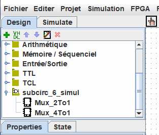

Librairie Logisim
Chaque projet Logisim est une bibliothèque pouvant être chargée dans d'autres projets Logisim. Il suffit de l'enregistrer dans un fichier, puis dans un autre projet de sélectionner le fichier à l'aide du menu | Projet |→| Charger une Librairie |→| Библиотека Logisim... | pour le charger. Tous les circuits définis dans le premier projet seront alors disponibles en sous-circuits pour le second. Cette fonctionnalité vous permet de réutiliser des composants communs à plusieurs projets et de partager des composants favoris avec vos amis (ou étudiants).
Ci-dessous notre projet chargé comme une librairie est disponible dans le panneau de navigation.

Note: La librairie ne doit pas contenir de circuit de même nom q'un circuit deja présent dans le projet.
Chaque projet a un "circuit principal" désigné qui peut être modifié pour faire référence au circuit actuel via le menu | Projet |→| Définir comme circuit principal |. La seule signification de "Circuit principal" est simplement qu'il sera affiché lors de la première ouverture du projet. Le nom par défaut ("main") du circuit principal dans un fichier nouvellement créé n'a aucune signification et vous pouvez supprimer ou renommer ce circuit.
Avec une bibliothèque Logisim chargée, vous êtes autorisé à visualiser les circuits et à manipuler leurs états, mais Logisim vous empêchera de modifier la conception des circuits et les autres données stockées dans le fichier.
Si vous souhaitez modifier un circuit dans une bibliothèque Logisim chargée, vous devez l'ouvrir séparément dans Logisim. Dès que vous l'enregistrez, automatiquement et immédiatement l'autre projet devrait charger la version modifiée. Mais si ce n'est pas le cas, vous effectuez un clic-droit de la souris sur le dossier de la bibliothèque dans le volet de l'explorateur et sélectionnez le sous-menu | Charger une librairie |.
Suite: Guide de l'utilisateur.